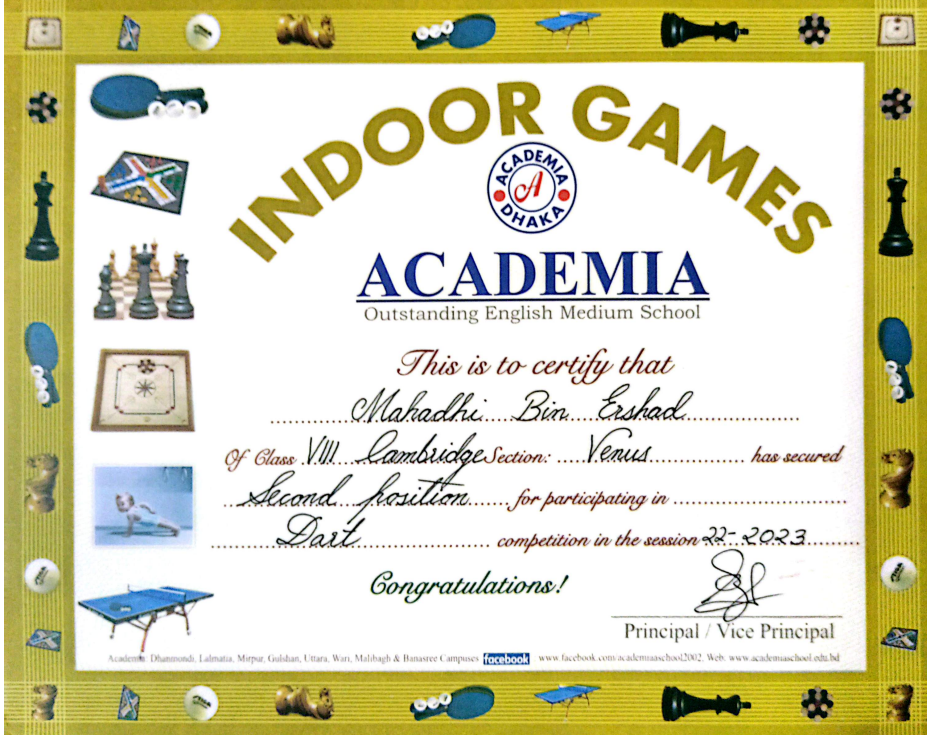
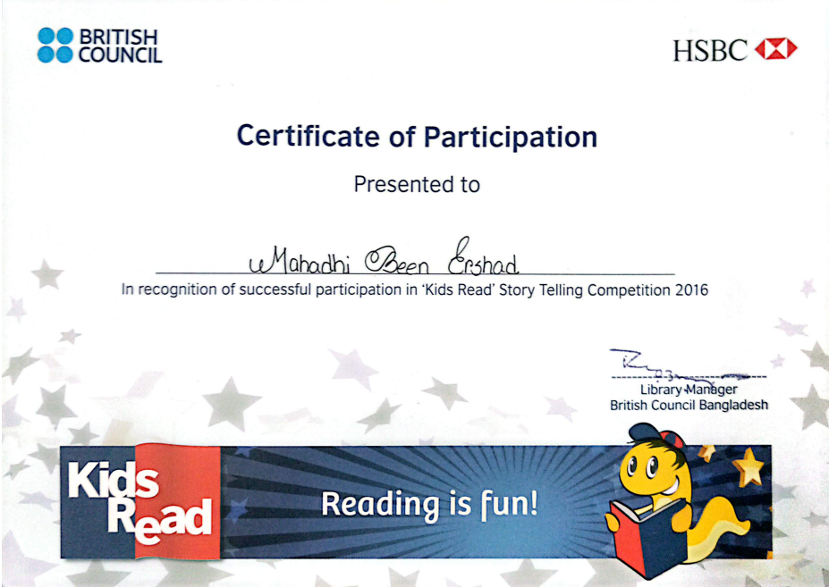

Mohammad Mahadhi Been Ershad
Diploma in Information Technology Student
Passionate about Software Development, Leadership, Project Management and Emerging Technologies.
🚀 View My Work 📄 Download CV
Passionate about Software Development, Leadership, Project Management and Emerging Technologies.
🚀 View My Work 📄 Download CV
I am a Semester 5 Diploma in Information Technology student at INTI International College Subang. I am passionate about software development, project management, leadership and emerging technologies. Through academic projects, professional certifications, volunteering and leadership programs, I continuously develop both technical and professional skills. My goal is to use technology to build practical solutions while growing as a future IT professional.
Successfully developed and deployed a Campus Mobile Application with Student, HOD and Admin access.
Earned certifications in Artificial Intelligence, Project Management, Leadership Development, Financial Literacy and more.
Participated in scouting, leadership development programs and volunteer activities that strengthened teamwork and communication skills.
Currently pursuing a Diploma in Information Technology at INTI International College Subang.
A role based Campus Mobile Application designed to improve communication and access to academic information for students and staff.
Launch DemoStudent: Stu004 / Pass-123456
HOD: Hod001 / Pass-123456
Admin: Admin001 / Pass-123456

FutureReady AI Foundation

Project Management Bootcamp

Youth Leadership Training

Financial & Banking Literacy

Indoor Games Achievement

Science Fair Participation

Kids Read Competition

Scout Camp Participation
Outside technology and academics, I enjoy football, leadership activities, volunteering, and continuous learning. Football has taught me teamwork, discipline, resilience and communication skills that I apply in both academic and professional environments.
Name: Mohammad Mahadhi Been Ershad
Email: mahadhiacademia@gmail.com
Institution: INTI International College Subang
Program: Diploma in Information Technology